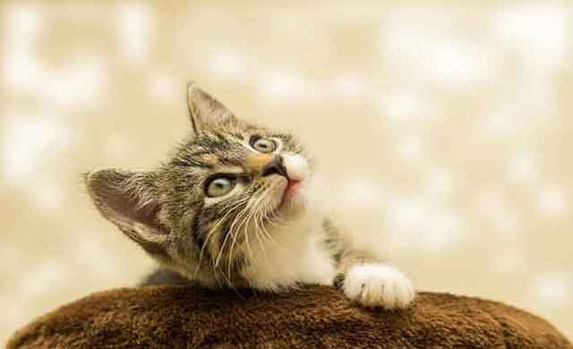

고양이가 좋아하는 행동 5가지
시크하고 도도한 고양이. 하지만 그들에게도 '좋아하는 일'이 반드시 있습니다. 겉으로 표현을 하지 않는다고 하더라도 분명 좋아하는 일이 있는 고양이에게 집사가 해줄 수 있는 일 5가지를 알아볼 텐데요. 아직 새집으로 온 지 얼마 되지 않은 고양이 또는 어색한 기류가 흐르고 있는 고양이와 집사라면 다음과 같은 방법을 활용해서 고양이와 친해져 보는 것은 어떨까요?
1) 고양이가 좋아할 만한 환경을 만들어 줍니다.
고양이를 사랑하는 마음은 고양이를 키우고자 한 집사 누구에게도 찾아볼 수 있는 마음입니다. 하지만 마음만으로는 냥이와 친해질 수 없겠죠! 친해지기 위해서는 집사의 첫 번째 임무. 냥이가 좋아할 만한 환경을 만들어주는 것입니다. 고양이가 마음 편히 자신만의 공간을 갖고 쉴 수 있게 해 주고, 배변 활동을 자유롭게 할 수 있도록 쾌적한 화장실과 실내 공간을 확보해 주어야겠죠?
2) '꾹꾹이'를 할 수 있는 소품, 공간이 필요합니다.
고양이가 꾹꾹이를 하는 것은 어릴 때 엄마 젖을 빨던 기억이 남아 있기 때문이라고 합니다. 고양이의 앞발로 부드럽고 푹신한 무엇인가를 꾹꾹 누르는 것은 마치 엄마의 배처럼 느끼고 안정감을 가지게 된다고 합니다. 고양이가 다가와 나의 배를 또는 신체 어딘가에 꾹꾹이를 하고 있다면, 기분 좋게 스킨쉽을 받아줄 필요가 있습니다.
3) 고양이 애정품, 캣닙을 가까이합니다.
캣닙은 고양이가 좋아하는 애정품이기도 합니다. 캣닙에서 나는 향긋한 박하 향은 고양이의 최면을 거는 일종의 최면제이자 흥분제라고 할 수 있는데요. '고양이 마약'이라고 불릴 만큼 고양이가 사랑하는 캣닙! 많은 캣닙 대신 적절한 양의 캣닙을 주변에 놓아두거나 은은하게 향을 느낄 수 있게 한다면 행복함에 취한 냥이를 발견할 수 있을 것입니다.
4) 고양이가 좋아하는 스킨쉽을 아끼지 않습니다.
사람도 좋아하는 스킨쉽이 있듯이 고양이도 좋아하는 스킨쉽이 있습니다. 가령, 이마를 부드럽게 긁어주거나 쓰다듬는 행동입니다. 그 외에도 볼이나 엉덩이 등 고양이가 좋아하는 부위를 부드럽게 자극해 준다면 냥이와의 친밀도는 더욱 높아질 수 있을 것입니다.
5) 고양이만의 작은 공간을 선물합니다.
고양이는 작고 좁은 공간을 선호합니다. 몸에 착 붙고 좁은 공간이 주는 안정감 때문인데요. 캣타워도 좋지만, 몸을 숨기고 안정감을 찾을 수 있는 작은 상자를 만들어 주는 것도 냥이에게는 좋아하는 선물이 될 수 있습니다.
아무리 개인주의를 지향하는 고양이라도 가족이 된 반려인과 친해지기를 거부하지는 않을 것입니다. 고양이가 좋아하는 행동으로 반려묘와의 친밀감을 더욱더 높여보시길 바랍니다. 날로 가까워져 가는 둘의 모습을 그려보실 수 있을 것입니다.
[출처] 고양이가 좋아하는 행동 5가지 | 작성자 꽁치마루